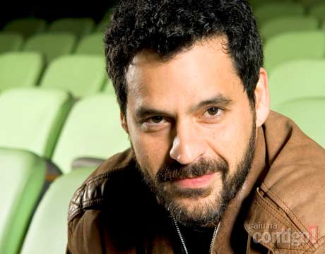
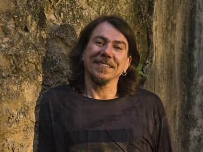

A cultura recifense é bastante diversificada, uma vez que foi influenciada por indígenas, africanos e europeus.
Produção do Conhecimento
O município deu origem a grandes nomes de todas as áreas do
conhecimento:
Ciências Exatas
Cristovam Buarque
Leopoldo Nachbin
Mário Schenberg
Norberto Odebrecht
José Leite Lopes
Paulo Ribenboim
Joaquim Cardoso
Aron Simis
Israel Vainsencher
Luís Freire
Gauss Moutinho Cordeiro
Ricardo de Carvalho Ferreira
Antonio Mário Antunes Sette
Fernando de Souza Barros
José Tibúrcio Pereira Magalhães
Ciências Humanas
Paulo Freire
Joaquim Nabuco
Manuel Bandeira
Nelson Rodrigues
João Cabral de Melo Neto
Clarice Lispector
Gilberto Freyre
Olegário Mariano
Barbosa Lima Sobrinho
Josué de Castro
Manuel de Oliveira Lima
Adelmar Tavares
Martins Júnior
João Carneiro de Sousa Bandeira
Geraldo Holanda Cavalcanti
Paulo Freire
Paulo Freire é considerado um dos pensadores mais notáveis da
história da pedagogia mundial. A pedagogia crítica foi fortemente
influenciada pelos trabalhos deste intelectual, o mais aclamado
educador crítico. O recifense foi o brasileiro mais homenageado de
todos os tempos: ganhou 41 títulos de Doutor Honoris Causa de universidades como Harvard, Cambridge e
Oxford.
Gilberto Freyre
Gilberto Freyre, um dos mais importantes sociólogos do século XX, representa um marco na história do Brasil
devido ao seu livro Casa-Grande & Senzala, que demonstra a importância dos escravos para a formação do país e
que brancos e negros são absolutamente iguais.
Mário Schenberg
Mário Schenberg, considerado o físico teórico mais importante do Brasil, instaurou os primeiros cursos de
computação da USP. Albert Einstein apontou o recifense como um dos dez maiores cientistas de sua época; e disse:
"Se eu tivesse de escolher um cientista como continuador de minha obra, seria o brasileiro Schenberg".
Leopoldo Nachbin
Leopoldo Nachbin, considerado o mais importante matemático brasileiro, foi cofundador do IMPA e do CBPF. É
conhecido pelo Teorema de Nachbin.
Produção artística e folclore
Teatro, cinema e televisão
LenineBruno Garcia

A metrópole pernambucana deu origem a nomes notórios do teatro, cinema e televisão, como:
Marco Nanini
Bruno Garcia
Aramis Trindade
Tuca Andrada
Patrícia França
Carmem Verônica
Virgínia Cavendish
Guilherme Berenguer
Armando Babaioff
Fabiana Karla
Arlindo Grund
Ernani Moraes
Caio Braz
Lucy Ramos
Giselle Tigre
Pedro Malta
Carolina Holanda
Cynthia Zamorano
Germano Haiut
Bruno Dubeux
Rebecca da Costa
Anthero Montenegro
Carvalhinho
André Valli
Walter Breda
Rhaisa Batista
Gustavo Falcão
Luiz Armando Queiroz
Rayana Carvalho
Edmílson Barros
Renato Góes
Rodrigo Garcia
Johnny Hooker
Magdale Alves
Eleonora Prado
Guel Arraes
João Falcão
George Moura
Marcelo Gomes
Kleber Mendonça Filho
Heitor Dhalia
Lírio Ferreira
Hilton Lacerda
Katia Mesel
Música
Lenine

Reginaldo Rossi
Na música, além de pernambucanos da região
metropolitana e de outras cidades que cantaram e cantam o Recife,
como Chico Science, Alceu Valença, entre diversos outros, há
nomes de grande destaque nascidos no município, como:
Lenine
Reginaldo Rossi
Naná Vasconcelos
Antônio Nóbrega
Bezerra da Silva
Walter Wanderley
Siba
Lula Queiroga
Michael Sullivan
Clarice Falcão
Robertinho do Recife
Miguel Kertsman
Antônio Meneses
Luperce Miranda
Heraldo do Monte
James Strauss
Luís Álvares Pinto
José Carlos Burle
Marlos Nobre
Fernando Lobo
Johnny Hooker
DJ Filipe Guerra
Vale citar artistas que se consideram recifenses, como é o
caso da atriz Chandelly Braz, do DJ Dolores e da cantora Karina
Buhr
Artes Plásticas e Design
Também na metrópole pernambucana nasceram modelos de
grande destaque internacional e nomes notórios da moda, como:
Francisco Brennand
Romero Britto
Vicente do Rego Monteiro
Aloísio Magalhães
Andree Guittcis
Telles Júnior
Abelardo da Hora
Gilvan Samico
Paulo Bruscky
Galo de Souza
Manifestações Culturais
As manifestações culturais mais relevantes de Pernambuco ocorrem na
capital, ressaltando-se o Movimento de Escritores Independentes de
Pernambuco, que na década de 1980 reuniu grande número de poetas;
o Abril Pro Rock, que surge como revelador do Movimento
Manguebeat; entre outros.
Frevo
Frevo
O Frevo, um dos principais gêneros musicais e danças do Recife e
símbolo do Carnaval Recife/Olinda, se caracteriza pelo ritmo acelerado
e pelos passos que lembram a capoeira. Esse gênero já revelou e
influenciou grandes músicos. Antes da criação da axé music na década
de 1980 o frevo era utilizado também no Carnaval de Salvador. Em
cerimônia realizada na cidade de Paris, França, no ano de 2012, a
UNESCO anuncia que, aprovado com unanimidade pelos votantes, o
frevo foi eleito Patrimônio Cultural Imaterial da Humanidade.
Manguebeat
Caranguejo da Rua da Aurora, no Recife. O caranguejo é tido como símbolo do Manguebeat.
Nos anos 90 surgia no Recife o Manguebeat, movimento da
contracultura que mistura ritmos regionais, como o maracatu, com
rock, hip hop, funk e música eletrônica. O movimento tem como
principais críticas o abandono econômico-social do mangue, a
desigualdade de Recife (não apenas desta, sendo apenas um reflexo do
descaso do Estado fora do eixo Rio-São Paulo).
Apesar de ter sido inventado já na década de 1970 pelo guitarrista
Robertinho do Recife com os álbuns "Jardim da Infância" (1977),
"Robertinho no Passo" (1978) e "E Agora pra Vocês... Suingues
Tropicais" (1979), o manguebeat tem como ícone o músico Chico
Science, ex-vocalista, já falecido, da banda Chico Science e Nação
Zumbi, idealizador do rótulo mangue e principal divulgador das ideias,
ritmos e contestações do manguebeat. Outro grande responsável pelo
crescimento desse movimento foi Fred Zero Quatro, vocalista da banda
Mundo Livre S/A e autor do primeiro manifesto do Mangue de 1992,
intitulado "Caranguejos com cérebro".
Cinema
Bobina de Cinema
O Cinema do Recife é muito respeitado pela crítica: já recebeu
inúmeros prêmios nacionais e internacionais e é recordista de
indicações e premiações em diversas edições de festivais. Há filmes de cineastas e roteiristas pernambucanos que alcançaram grande projeção.
Dramas
Baile Perfumado (1996)
Amarelo Manga (2002)
Cinema
Aspirinas e Urubus (2005)
Febre do Rato (2012)
O Som ao Redor (2013)
Romances e Comédias
O Auto da Compadecida (1999)
Caramuru - A Invenção do Brasil (2001)
A Máquina (2005)
Fica Comigo Esta Noite (2006)
O Bem Amado (2010)
Cineastas que atingiram notoriedade internacional:
Marcelo Gomes
Kleber Mendonça Filho
Cláudio Assis
Daniel Aragão
Heitor Dhalia
Lírio Ferreira
Gabriel Mascaro
Hilton Lacerda
Um dos muitos êxitos recentes foi o filme O Som ao Redor, do recifense Kleber Mendonça Filho, que foi incluído na respeitada lista dos 10 melhores do ano do jornal The New York Times, ao lado de produções como Django Livre de Quentin Tarantino e Lincoln de Steven Spielberg.
Heitor Dhalia, por sua vez, teve sua estreia em Hollywood em 2012, com o longa-metragem 12 Horas, estrelado pela
atriz norte-americana Amanda Seyfried.
Em um período de doze meses, Recife conquistou os principais prêmios dos três maiores festivais nacionais:
os filmes Era uma vez eu, Verônica, de Marcelo Gomes, e Eles voltam, de Marcelo Lordello, dividiram o Candango de Melhor Filme no Festival de Brasília;
O Som ao Redor, de Kleber Mendonça Filho, conquistou o Troféu Redentor de Melhor Filme no Festival do Rio;
e Tatuagem, de Hilton Lacerda, ganhou o Kikito de Melhor Filme no Festival de Gramado.
Espaços culturais e de lazer
O município abriga vários museus, centros culturais como por exemplo
o Caixa Cultural, Centro Cultural dos Correios e o Santander Cultural e
instituições voltadas para a promoção de ações artísticas e culturais tais
como a centenária Academia Pernambucana de Letras, Academia de
Artes e Letras de Pernambuco e o Instituto Ricardo Brennand, um dos
mais importantes museus do Brasil, que abriga importante coleção de
armaria, gravuras e outras obras de arte abrangendo o período entre a
Idade Média e o fim das Invasões holandesas do Brasil. Destacam-se a
maior Coleção de pinturas de Frans Post do mundo e as Armaduras
Medievais.
Entre os museus têm destaque o Museu do Estado de Pernambuco, o
Museu da Cidade do Recife, o Museu do Memorial da Justiça, o
Museu do Homem do Nordeste e o Museu da Abolição.
Teatros
O Teatro de Santa Isabel é um dos principais teatros do Recife, e
compõe importante conjunto arquitetônico e paisagístico na Praça da
República com o Palácio do Campo das Princesas, o Palácio da Justiça
e o Liceu de Pernambuco.
O Recife é o terceiro maior polo gastronômico do Brasil segundo a
Associação Brasileira de Bares e Restaurantes (Abrasel), com cerca de
10 mil estabelecimentos, logo após Rio de Janeiro e São Paulo. A Rua
da Hora, no bairro do Espinheiro, Zona Norte, e a Rua Capitão
Rebelinho, no bairro do Pina, Zona Sul, vêm se tornando redutos dessa
fase da culinária recifense.
Recife é também a
terceira cidade brasileira em número de restaurantes
estrelados pelo Guia Quatro Rodas 2013
, atrás somente de São Paulo e
do Rio de Janeiro. Onze estabelecimentos da cidade, que contam com
chefs renomados e que vão da cozinha regional às cozinhas lusitana,
italiana, francesa, japonesa e peruana, foram agraciados. Outros três
estabelecimentos pernambucanos receberam a classificação.
Na cozinha pernambucana existem elementos herdados dos povos africanos, indígenas e europeus. Diversas receitas
originais provenientes de outros continentes foram adaptadas com ingredientes encontrados com facilidade na
região.